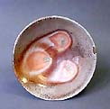

| Owen
Rye
Australian Anagama Studio Potter
Owen
Rye has been studying, practicing, teaching and writing about ceramic
art for 40 years. His contributions to the field are well documented:
the list of publications, conference presentations and exhibitions
spans seven pages in his biography. He is a well-known leader in
the woodfire movement in Australia and overseas, and his interest
in all things involving clay and fire has made him a valued teacher
across the broad spectrum of ceramics. He will retire from Melbourne's
Monash University at the end of 2003 to focus on his studio work
at Boolarra South in, Victoria. It seems an appropriate stage for
some reconnaissance, exploring the nuances of his new anagama kiln,
and seeking new ideas and directions. His 2003
exhibition at the Ceramic Art Gallery in Sydney confirms
he is doing just that.
In Western countries like Australia, the cultural
baggage that comes with anagama firing and kilns can prove overwhelming
and aesthetically limiting, leading to work that seems out of kilter
with both its Japanese birthplace and adopted homeland. Rye's work,
in contrast, is identifiably Australian and uniquely his own. It
has evolved in Australia, through his trial-and-error approach to
learning the process. He never trained in Japan and cites no Japanese
potter or style responsible for his development. He values the friendship
of New Zealand/Australian woodfirer Chester
Nealie, and acknowledges the influence of Alan
Peascod's concepts of multi-layered surfaces. Rye also shares
with Peascod an interest in Middle Eastern ceramics.
His
forms are robust and forthright, yet with a softness and subtlety
that suits the firing process as well as his aesthetic. Surfaces
don't just sit well on his pots; they manipulate the forms through
effects of fire, accumulated glaze and ash, and post-firing treatment
such as sandblasting. Many reviewers have focused on the imagery
of these complex surfaces. Says Rye: "The best forms derive
from a mixture of intent and accident. I look for qualities of form
which proclaim the fluidity of clay, the softness derived from a
somewhat erratic movement, slowed down and frozen".
More Artists of the Week
|
{kind=link}
{kind=link}
{kind=link}